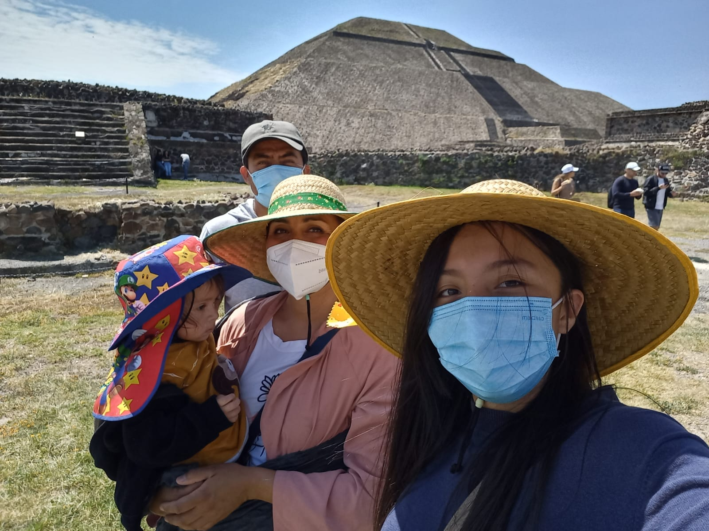

Esta es mi familia

El hombre de atrás es mi padre Alejandro Piliado Cedillo es el segundo hijo de una familia de 5 hermanos tiene 43 años es signo tauro Estudio psicologia y trabaja como mecánico de carros pero prefiere las motos su comida favorita son las chuletas y la coca ,ama dormir y los gatos.
La mujer de rosa es mi madre Itzel de Jesús Estrada Luna es la segunda hija de una familia de 7 hermanos tiene 40 años es signo capricornio estudio psicología y trabaja como maestra en Preparatoria sus postres favoritos son el pastel de chocolate y el capuchino ama dormir y cuidar plantas.
El bebé es mi hermano menor su nombre es Jesús Leonardo Piliado Estrada tiene 3 años es signo capricornio su comida favorita es la sopa este año ingresara a kinder.